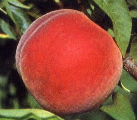
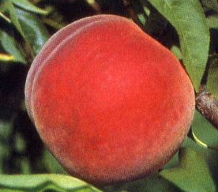
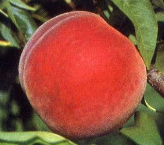
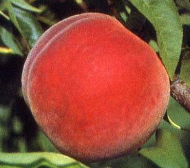

 

Peaches are believed to have originated in China more than 8,000 years ago. They are often referred to as the "Queen of Fruits."
In Chinese culture, the peach is a symbol of longevity and immortality. It is often associated with Taoist legends and is said to grant eternal life.
Peaches are a good source of vitamins A and C, potassium, and dietary fiber. They contribute to a healthy diet and may have various health benefits.
There are over 2,000 different varieties of peaches, which can be categorized into two main types: clingstone and freestone. The flesh of clingstone peaches clings to the pit, while freestone peaches have flesh that easily separates from the pit.
The skin of peaches comes in various colors, including shades of red, yellow, and white. The color is influenced by the variety of peach.
The pit or seed inside a peach is often referred to as a "stone." It contains a small seed, which is actually the almond-like kernel. This kernel is sometimes used to produce peach kernel oil.